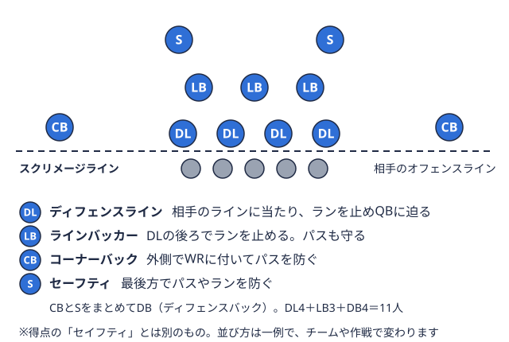

トレーニング 2026-11-16
アメフトのパワークリーンとスクワット｜下半身パワーを高める進め方と注意点
「ベンチプレスは伸びてきたけれど、下半身の力強さやスタートの速さが足りない」と感じる部員は少なくありません。結論から言うと、下半身のパワーを伸ばすときは、スクワットで土台となる筋力をつくり、パワークリーンで「素早く力を出す動き」を練習するという組み合わせが、国内外の解説でよく紹介されています。ただし、パワークリーンは習得に時間がかかる種目です。この記事では、2種目の役割と進め方、安全面の注意点を、公開されている解説や研究をもとに整理します。
アメフトで下半身のパワーが求められる場面
アメフトは、スナッププレー開始の動作。地面に置いたボールを、攻撃側の選手が後ろへ渡す。  用語辞典で見るからの一瞬のスタート、ラインでの押し合い、タックルボールを持つ相手を、体を使って止めること。攻撃のラインの端に立つ選手の呼び名でもある。用語辞典で見るへの踏み込み、方向転換といった短い時間・高い出力の動きが連続する競技です。たとえばOLスクリメージライン上に並ぶ5人の壁役。パスを投げる選手を守り、走る選手の道を作る。
用語辞典で見るからの一瞬のスタート、ラインでの押し合い、タックルボールを持つ相手を、体を使って止めること。攻撃のラインの端に立つ選手の呼び名でもある。用語辞典で見るへの踏み込み、方向転換といった短い時間・高い出力の動きが連続する競技です。たとえばOLスクリメージライン上に並ぶ5人の壁役。パスを投げる選手を守り、走る選手の道を作る。 用語辞典で見るやDL守備の最前列に並ぶ選手たち。相手のラインに当たって走るプレーを止め、パスを投げる選手に迫る。
用語辞典で見るやDL守備の最前列に並ぶ選手たち。相手のラインに当たって走るプレーを止め、パスを投げる選手に迫る。
ポジションによって必要な力の質は異なるため、どの種目をどれだけ行うかは、チームの指導者やストレングスコーチと相談して決めるのが基本です。本記事は、あくまで一般的な考え方を整理したガイドです。
スクワットとパワークリーンの役割の違い
2つの種目は、どちらも下半身を中心に全身を使いますが、狙いが少し異なります。
| 種目 | 主な狙い | 動きの特徴 | 取り入れるときの考え方 |
|---|---|---|---|
| スクワット | 下半身の筋力（土台）づくり | バーを担いでしゃがみ、立ち上がる。比較的ゆっくり力を出せる | フォームを固めてから、重量を少しずつ上げる |
| パワークリーン | 素早く力を出す動き（パワー）の練習 | 床から肩の前までバーを一気に引き上げて受ける | 軽い重量でフォームを習得してから負荷を足す |
筋力が土台にあるほど、その上に素早く力を出す練習を乗せやすい、という考え方があります。一方で、どちらか1種目だけで競技力が決まるわけではないため、全体の中の一要素として位置づけることが現実的です。
スクワットで押さえたい基本
SPAIAの解説では、アメフト向けの体幹・下半身の種目として、足を肩幅に開き、つま先を外側に向け、太ももが床と平行になるまで腰を落とすスクワットが紹介されています。目安として15回×3セットが挙げられており、慣れてきたら同じ体格の人をおんぶして行う方法も紹介されています（SPAIA）。
ただし、15回前後の高回数は主に基礎づくりや慣れの段階での目安です。筋力そのものを高めたい場合は、より少ない回数で限界に近づく重い負荷を使う考え方もありますが、扱う重量が増えるほどフォームの崩れが腰やひざへの負担につながりやすくなります。そのため、次のような順番で進めるのが無理の少ない進め方です。
- 自重（バーなし）で、しゃがむ深さと姿勢を固める
- 空のバーを担いで、フォームを指導者に確認してもらう
- 重量を少しずつ増やし、フォームが崩れる手前でセットを止める
- 高重量を扱うときは、パワーラックのセーフティバーやスポッターを必ず用意する
ひざに不安がある場合は、膝のACL予防ガイドも参考にしてください。
パワークリーンの4ステップ
パワークリーンは、床にあるバーを一気に引き上げて肩の前で受ける種目です。Nikeの解説では、次の4つの段階に分けて説明されています（Nike「パワークリーンのやり方」）。
ステップ1 最初の姿勢（セットアップ）
- 足を腰幅に開き、バーが土踏まずの上あたりに来る位置に立つ
- 太ももが床と平行になる手前まで腰を落とし、胸を少し上げて背中をまっすぐに保つ
- 両足に均等に体重をかける
ステップ2 ファーストプル
床を強く押しながら、腰と肩を同じ速度で上げていきます。バーはひざの位置まで引き上げ、それ以上は高くしません。
ステップ3 セカンドプルとトリプルエクステンション
腰を前に押し出すようにしてバーを太ももの上まですくい上げ、腰・ひざ・足首を完全に伸ばします。この「3つの関節を一気に伸ばす」動きが、パワークリーンの中心です。
ステップ4 キャッチ（受け止め）
上体をバーの下へすばやく入れ、肘を前に突き出して手首を返し、浅いスクワットの姿勢で肩の前にバーを受けます。肘を高く保って立ち上がり、バーは丁寧に床へ戻します。
よくあるミス
同じ解説では、よくある間違いとして次の点が挙げられています。
- 最初の姿勢で腰の位置が高すぎる、または低すぎる
- セカンドプルで肘を引くタイミングが早すぎる
- バーを体（すね・太もも・上体）に沿わせられない
- 両足に均等に体重をかけられていない
動作が複雑なため、自分では気づきにくいミスが多い種目です。動画を撮ってもらう、指導者に横から見てもらうといった確認が役立ちます。
習得には時間がかかる。軽い重量から始める
Nikeの解説では、初心者はウェイトを外したバーベル（15〜20kg）や長い塩化ビニルパイプで練習し、重量の目安は自覚的運動強度（10段階）の5〜7程度にとどめることが紹介されています。また、アスリートでもフォームの習得に数か月から数年のトレーニングが必要になる場合がある、とも説明されています。
つまり、周りが高重量でやっているからといって、すぐに同じ重量に挑戦する必要はありません。次のような段階の踏み方が一般的です。
- 準備種目でバーの引き方に慣れる（デッドリフト、ハイプル、フロントスクワットなど。Nikeの解説で、パワークリーンの準備に役立つ種目として挙げられているもの）
- 空のバーで、4ステップを通して練習する
- フォームが安定してから、少しずつプレートを足す
- 重量が上がっても、同じフォームを保てているか確認する
「重さ」よりも「同じフォームで毎回できるか」を優先すると、けがのリスクを抑えやすくなります。
研究で示されていること（過信しない見方）
パワークリーンなどの重量挙げ系種目の効果については、いくつかの報告があります。
- Nikeの解説では、2008年の研究として、筋力トレーニングにパワークリーンを組み込むとジャンプの高さや短距離走の速度が向上する可能性が示された、と紹介されています。最も顕著な効果は14〜15週間の継続後に見られたとされています。
- NSCA（全米ストレングス&コンディショニング協会）の学術誌 Strength & Conditioning Journal に掲載された、パワーを高める方法についてのレビューでは、フットボール選手を対象に、パワークリーンなどの重量挙げ系種目とジャンプトレーニングを組み合わせた場合のほうが、高重量のレジスタンストレーニングとジャンプトレーニングだけの場合より、パワーに関する適応がよかったという趣旨の報告がまとめられています（有料論文のため本文は未確認で、公開されている要旨の範囲での紹介です）。
ただし、これらは対象者や期間、プログラムの条件が限られた研究であり、「やれば必ず走力やジャンプ力が上がる」とまでは言えません。結果には個人差があります。取り入れる際は、自分の目的やチームの練習量と照らして判断してください。
なお、日本ストレングス&コンディショニング協会（NSCAジャパン）の会員向けページには、アメフト選手向けに「パワー向上方法」「アジリティトレーニング」などの論文紹介が掲載されています（NSCAジャパン アメリカンフットボール、本文は会員専用）。S&Cの専門的な情報を詳しく学びたい場合は、こうした学術・専門団体の資料も出発点になります。
ベンチプレス・走力トレーニングとの組み合わせ方
下半身のパワー種目だけを増やすと、全体の疲労が積み上がり、他の練習に影響することがあります。上半身はベンチプレスの記録を伸ばす見直し、方向転換や反応はアジリティトレーニングの種目といった形で、全体のバランスの中で組み立てると考えやすくなります。
組み立てのヒントとして、次の点を意識してみてください。
- 週の中で、高重量の下半身日と、疲労を残しにくい日を分ける
- 試合や強度の高い練習の直前に、新しい種目や自己ベスト更新を入れすぎない
- 疲労が抜けにくいときは、重量やセット数を下げることも選択肢にする
筋量を増やしたい時期は、増量のための食事メニューやプロテインの摂取タイミング、睡眠・回復も合わせて見直すと、トレーニングの土台が整います。
けがを防ぐための注意点
下半身の高重量種目は、フォームが崩れると腰・ひざ・ハムストリングなどに負担がかかる場合があります。次の点を目安にしてください。
- ウォームアップを省略しない。特に股関節・足首の動きを事前に確認する
- 痛みや違和感があるときは無理に続けず、トレーナーや医師に相談する
- 単独での高重量トレーニングを避け、スポッターとセーフティバーを活用する
- 疲労が強い日に、重量更新やひねりを伴う動作を無理に入れない
肉離れについてはハムストリングの肉離れ予防ガイド、全体のけが予防の考え方はタックルのフォームと安全の記事もあわせて参考にしてください。
オフシーズンに取り入れる場合の流れ
高重量のウエイトや新しい種目の習得は、試合の頻度が少ないオフシーズンに比重を置きやすい取り組みです。大学アメフトの年間の流れはシーズンカレンダーガイドで整理しています。
関東学生リーグ（TOP8・BIG8）の秋季リーグ戦が終わったあと、次のシーズンに向けて下半身のパワーづくりに取り組む場合、おおまかには次のように進めるとイメージしやすくなります。
- シーズン終了直後は、疲労と小さなけがの回復を優先する
- フォームの確認と軽い重量での練習を中心に、土台を整える
- 少しずつ重量や強度を上げ、春季オープン戦リーグ戦の順位や入れ替えに関係しない、春に行われる試合。秋の本番に向けた調整の場。用語辞典で見るに向けて仕上げる
この順序や期間はチームの方針によって異なります。実際のスケジュールは所属する部の指導者に確認してください。
一次データで見るチームごとの特徴
走力やパワーの強化がどのように試合結果に表れているかを、自分のチームと他チームで見比べたい場合は、サイトの一次データも役立ちます。ただし、得点や勝敗は戦術・選手層・対戦相手などさまざまな要因で決まるため、特定のトレーニングの効果と直接結びつけることはできません。あくまでチームの傾向をつかむ参考としてお使いください。
よくある質問
Q. パワークリーンはアメフト部員全員が行うべきですか？
必ずしもそうとは限りません。チームやポジション、年次、けがの状況によってメニューは異なります。ストレングスコーチや指導者が、選手に合う種目を選ぶのが一般的です。
Q. 初心者はスクワットとパワークリーン、どちらから始めればよいですか？
一般的には、動作が比較的シンプルなスクワットで基本姿勢と下半身の使い方を固めてから、パワークリーンの準備種目に進む流れが紹介されています。ただし、チームの指導方針があればそちらを優先してください。
Q. 目標重量の目安はありますか？
ネット上では「スクワットは何kg以上」といった目安が語られることがありますが、公式な基準ではなく、個人の見解にとどまるものが多いです。体格やポジションによっても適正は異なるため、他人の数値より、自分の過去の記録からの伸びを基準にするほうが実践的です。
Q. 痛みがあるときはどうすればよいですか？
無理に続けず、トレーナーや医師などの専門家に相談してください。痛みを我慢してフォームが崩れたまま続けると、別の部位を痛める場合があります。
まとめ
下半身のパワーを高めるには、スクワットで土台となる筋力をつくり、パワークリーンで素早く力を出す動きを練習する、という組み合わせがよく紹介されています。パワークリーンは動作が複雑で、習得に数か月以上かかる場合があるため、軽い重量とフォーム確認から始めることが大切です。ベンチプレスや走力トレーニング、食事・睡眠とのバランスを考え、痛みがあるときは無理をしないようにしてください。
参考リンク
- パワークリーンのやり方：初心者向けの4つのステップ | Nike
- アメフト選手のような肉体になれる、5つの筋トレポイント | SPAIA
- Methods of Developing Power（パワーを高める方法のレビュー）| Strength & Conditioning Journal（NSCA）
- アメリカンフットボール | NSCAジャパン
本記事は、Nike・SPAIA・NSCA関連資料が公開している情報をもとに、編集部が構成した一般的なトレーニングガイドです。効果や進め方には個人差があり、必ずしも同じ結果が得られるとは限りません。けがや痛みがある場合は医師などの専門家に相談し、種目の導入や重量設定は、所属チームの指導者・トレーナーとも相談のうえで取り組んでください。
この部活・競技を応援したい方へ
協賛・応援はこちらから。
取材してほしい部活を募集中
あなたの部活・チームを取材してほしい方はこちらから。
部活を続けながら、就活も進めたい方へ
体育会の学生のための就活相談です。無料で、メールアドレス・学年・所属の入力だけで始められます。